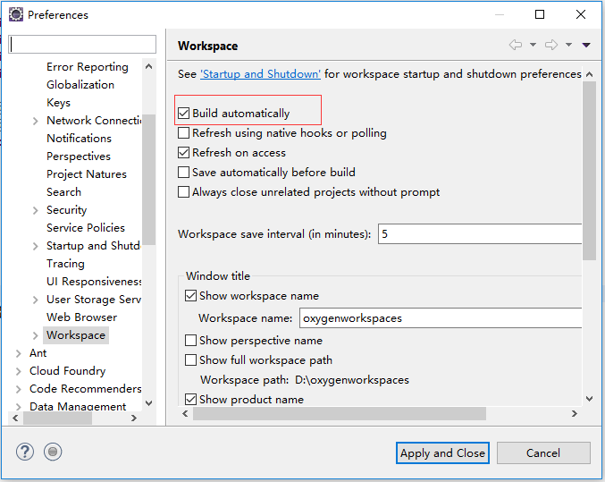

平日里开发项目中，修改了Java代码或者配置文件的时候，必须手动重启项目才能生效。所谓的热部署就是在你修改了后端代码后不需要手动重启，工具会帮你快速的自动重启是修改生效。其深层原理是使用了两个ClassLoader，一个Classloader加载那些不会改变的类（第三方Jar包），另一个ClassLoader加载会更改的类，称为restart ClassLoader，这样在有代码更改的时候，原来的restart ClassLoader 被丢弃，重新创建一个restart ClassLoader，由于需要加载的类相比较少，所以实现了较快的重启时间。
本文将介绍如何通过使用Spring-Boot-devtools来实现Spring Boot项目的热部署。IDE使用的是Eclipse Oxygen，并且使用Maven构建。
引入Devtools
搭建一个简单的Spring Boot项目，然后引入Spring-Boot-devtools：
|
|
devtools会监听classpath下的文件变动，并且会立即重启应用（发生在保存时机），因为其采用的虚拟机机制，该项重启是很快的。
在Eclipse中生效还需要修改spring-boot-maven-plugin插件：
|
|
并且开启Build Automatically：

测试热部署
在入口类中添加一个方法，用于热部署测试：
|
|
启动项目访问http://localhost:8080/，页面输出hello spring boot。
将方法的返回值修改为hello world并在保存的瞬间，应用便重启好了，刷新页面，内容也将得到更改。
所有配置
下面是所有Devtools在Spring Boot中的可选配置:
|
|
源码链接：https://github.com/wuyouzhuguli/Spring-Boot-Demos/tree/master/24.Spring-Boot-Devtools